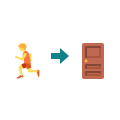
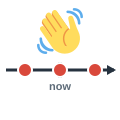
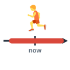
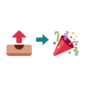
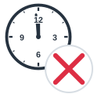
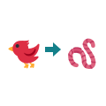

Time flies.
الوقت يمر بسرعة
Time flies when you're having fun.
يمر الوقت بسرعة حين تستمتع.
Idioms
مرّر الماوس على السماعة أو اضغط عليها لتسمع النطق. السماعة الكبيرة نطق أمريكي (وهو المكتوب بالرموز)، وزر UK نطق بريطاني.
الوقت يمر بسرعة
Time flies when you're having fun.
يمر الوقت بسرعة حين تستمتع.
الوقت من ذهب
Let's start now. Time is money.
لنبدأ الآن. الوقت من ذهب.
أن تأتي متأخرًا خير من ألا تأتي
You finally called me. Better late than never!
اتصلت بي أخيرًا. خير من ألا تتصل أبدًا!
لم أرك منذ زمن
Hi, Sara! Long time no see.
أهلًا يا سارة! لم أرك منذ زمن.

في آخر لحظة
We reached the gate in the nick of time.
وصلنا إلى البوابة في آخر لحظة.
في اللحظة الأخيرة
They signed the deal at the eleventh hour.
وقّعوا الصفقة في اللحظة الأخيرة.
نادرًا جدًا
We only eat out once in a blue moon.
لا نأكل خارج البيت إلا نادرًا جدًا.
على مدار الساعة
The hospital staff work around the clock.
يعمل طاقم المستشفى على مدار الساعة.
في سباق مع الزمن
We're working against the clock to finish.
نعمل في سباق مع الزمن لننتهي.
متأخر عن الجدول
The project is two weeks behind schedule.
المشروع متأخر أسبوعين عن الجدول.
قبل الموعد المحدد
We finished ahead of schedule.
انتهينا قبل الموعد المحدد.
في الموعد المقرر
Everything is on schedule.
كل شيء يسير حسب الجدول.
ينهي العمل لليوم
It's late. Let's call it a day.
لقد تأخر الوقت. لنكتفِ بهذا اليوم.
يقضي الوقت بلا هدف
I read a magazine to kill time.
قرأت مجلة لتمضية الوقت.
يكسب وقتًا
He asked a question just to buy time.
طرح سؤالًا فقط ليكسب وقتًا.
ينفد وقته
Hurry up. We're running out of time.
أسرع، وقتنا ينفد.
يعوّض ما فات
I'm studying hard to make up for lost time.
أذاكر بجد لأعوّض ما فاتني.
خذ وقتك
There's no rush. Take your time.
لا داعي للعجلة. خذ وقتك.
في وقت قصير جدًا
We'll be there in no time.
سنصل في وقت قصير جدًا.

من حين لآخر
I see him from time to time.
أراه من حين لآخر.
طوال الوقت
She talks about her job all the time.
تتحدث عن عملها طوال الوقت.
مسألة وقت
It's only a matter of time before he finds out.
إنها مسألة وقت قبل أن يكتشف الأمر.
آن الأوان
You're here! It's about time.
أنت هنا! آن الأوان.
حان الوقت تمامًا
It's high time you found a job.
لقد حان الوقت لتجد عملًا.
في الوقت الحالي
You can stay here for the time being.
يمكنك البقاء هنا في الوقت الحالي.

على المدى الطويل
This will save money in the long run.
سيوفر هذا المال على المدى الطويل.
عاجلًا أم آجلًا
Sooner or later, you'll have to decide.
عاجلًا أم آجلًا، ستضطر إلى اتخاذ القرار.

كلما كان أسرع كان أفضل
Send the file today. The sooner the better.
أرسل الملف اليوم. كلما كان أسرع كان أفضل.

في آخر دقيقة
He cancelled at the last minute.
ألغى في آخر دقيقة.
أحدث ما يكون
The site gives up-to-the-minute news.
يقدم الموقع آخر الأخبار لحظة بلحظة.
ضيق الوقت
Sorry, I can't talk. I'm pressed for time.
آسف، لا أستطيع الكلام. وقتي ضيق.

من بكّر ظفر
Start early. The early bird catches the worm.
ابدأ مبكرًا. فمن بكّر ظفر.
يعيد الزمن إلى الوراء
I wish I could turn back the clock.
أتمنى لو أستطيع إعادة الزمن إلى الوراء.
يومًا بعد يوم
He does the same work day in, day out.
يؤدي العمل نفسه يومًا بعد يوم.
ستسمع كلمة من كلمات الصفحة، فاضغط على الصورة التي تعبر عنها.
الكلمات المميزة هي كلمات هذه الصفحة. اضغط على أي كلمة ليبدأ الصوت منها ويكمل ما بعدها.
Hi, Sara! Long time no see. How's the startup?
أهلًا يا سارة! لم أرك منذ زمن. كيف حال شركتك الناشئة؟
Busy! We're working around the clock and against the clock. Time flies, and we're a month behind schedule.
مشغولة! نعمل على مدار الساعة وفي سباق مع الزمن. الوقت يمر بسرعة، ونحن متأخرون شهرًا عن الجدول.
I thought you were ahead of schedule.
ظننت أنكم تسبقون الموعد المحدد.
We were on schedule until the investor changed his mind at the eleventh hour. He cancelled at the last minute.
كنا نسير حسب الجدول حتى غيّر المستثمر رأيه في اللحظة الأخيرة. ألغى في آخر دقيقة.
That's terrible. So you're pressed for time?
هذا فظيع. إذن وقتكم ضيق؟
Very. We're about to run out of time, and it's only a matter of time before the bank calls. We asked for an extension to buy time.
جدًا. وقتنا ينفد، وإنها مسألة وقت قبل أن يتصل البنك. طلبنا تمديدًا لنكسب وقتًا.
You'll be fine in no time. You found another investor in the nick of time last year.
ستكونين بخير في وقت قصير. فقد وجدتِ مستثمرًا آخر في آخر لحظة العام الماضي.
I wish I could turn back the clock and start earlier. As they say, the early bird catches the worm.
أتمنى لو أستطيع إعادة الزمن إلى الوراء والبدء مبكرًا. فكما يقولون، من بكّر ظفر.
Better late than never. Are you at least sleeping well?
أن تأتي متأخرًا خير من ألا تأتي. هل تنامين جيدًا على الأقل؟
Not really. It's the same work, day in, day out. I think about it all the time.
ليس حقًا. العمل نفسه يومًا بعد يوم. أفكر فيه طوال الوقت.
It's high time you took a holiday! Even from time to time, you should stop and call it a day.
لقد حان الوقت لتأخذي إجازة! ولو من حين لآخر، عليكِ أن تتوقفي وتنهي العمل لليوم.
I know. But time is money, and I can't kill time on a beach. I'm trying to make up for lost time.
أعلم. لكن الوقت من ذهب، ولا أستطيع تمضية الوقت على الشاطئ. أحاول تعويض ما فات.
Sooner or later you'll need a rest. In the long run, it will help the company.
عاجلًا أم آجلًا ستحتاجين إلى الراحة. وعلى المدى الطويل سيفيد ذلك الشركة.
You're right. For the time being, I'll take one free evening a week. We only go out once in a blue moon.
أنت على حق. في الوقت الحالي سآخذ مساءً واحدًا فارغًا كل أسبوع. فنحن لا نخرج إلا نادرًا جدًا.
It's about time! Let's have dinner on Friday. Take your time and choose the place.
آن الأوان! لنتناول العشاء يوم الجمعة. خذي وقتك واختاري المكان.
Perfect. Send me your address. The sooner the better, because I want up to the minute news about you too!
ممتاز. أرسل لي عنوانك. كلما كان أسرع كان أفضل، لأنني أريد آخر أخبارك أنت أيضًا!
الكلمات المميزة هي كلمات هذه الصفحة. اضغط على أي كلمة ليبدأ الصوت منها ويكمل ما بعدها.
Last year I learned a hard lesson about deadlines. I had promised to finish a book by June, but I kept telling myself, "Take your time." I would kill time on my phone, and I would see my publisher only once in a blue moon. When we met, she smiled and said, "Long time no see," but I could tell she was worried. By spring I was behind schedule, and it was only a matter of time before she called. Time flies when you are avoiding work! Suddenly I was pressed for time and about to run out of time. To buy time, I asked for two more weeks. Then I worked around the clock, day in, day out, against the clock, trying to make up for lost time. I thought about the book all the time, and I wished I could turn back the clock. "It's about time," said my publisher when I finally sent the first half. "It's high time you got serious. Remember, time is money." I could never call it a day before midnight. At the eleventh hour, I found a mistake in the last chapter, and I had to rewrite it at the last minute. I sent the book in the nick of time, and I was not even on schedule, let alone ahead of schedule. For the time being, I am resting, though from time to time I still think about that year. The book was finished, and better late than never, but in the long run I want a calmer life. The early bird catches the worm, as my father used to say. Sooner or later, every writer learns this. So now I start each project early. The sooner the better! My publisher gives me up to the minute news about sales, and I expect to begin my next book in no time.
تعلمت العام الماضي درسًا قاسيًا عن المواعيد النهائية. كنت قد وعدت بإنهاء كتاب في موعد أقصاه يونيو، لكنني ظللت أقول لنفسي: «خذ وقتك». كنت أقضي الوقت بلا هدف على هاتفي، ولا أرى ناشرتي إلا نادرًا جدًا. وحين التقينا ابتسمت وقالت: «لم أرك منذ زمن»، لكنني أدركت أنها قلقة. وبحلول الربيع كنت متأخرًا عن الجدول، وكانت مسألة وقت قبل أن تتصل. يمر الوقت بسرعة حين تتجنب العمل! وفجأة صار وقتي ضيقًا وأخذ ينفد. ولأكسب وقتًا طلبت أسبوعين إضافيين. ثم عملت على مدار الساعة، يومًا بعد يوم، في سباق مع الزمن، محاولًا تعويض ما فات. كنت أفكر في الكتاب طوال الوقت، وتمنيت لو أستطيع إعادة الزمن إلى الوراء. قالت ناشرتي حين أرسلت النصف الأول أخيرًا: «آن الأوان. لقد حان الوقت لتأخذ الأمر بجدية. تذكّر أن الوقت من ذهب». ولم أنهِ عملي يومًا قبل منتصف الليل. وفي اللحظة الأخيرة وجدت خطأ في الفصل الأخير، فاضطررت إلى إعادة كتابته في آخر دقيقة. أرسلت الكتاب في آخر لحظة، ولم أكن حتى ملتزمًا بالجدول، فضلًا عن أن أسبق الموعد المحدد. وفي الوقت الحالي أستريح، وإن كنت من حين لآخر أفكر في ذلك العام. انتهى الكتاب، وأن يأتي متأخرًا خير من ألا يأتي، لكنني أريد على المدى الطويل حياة أهدأ. من بكّر ظفر، كما كان يقول والدي. وعاجلًا أم آجلًا يتعلم كل كاتب هذا. لذا أبدأ الآن كل مشروع مبكرًا. وكلما كان أسرع كان أفضل! وتزودني ناشرتي بآخر أخبار المبيعات لحظة بلحظة، وأتوقع أن أبدأ كتابي التالي في وقت قصير جدًا.